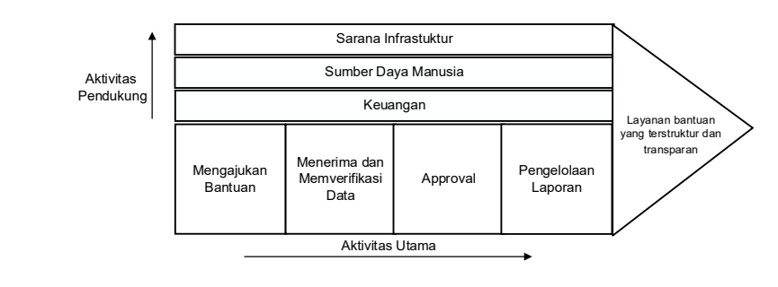
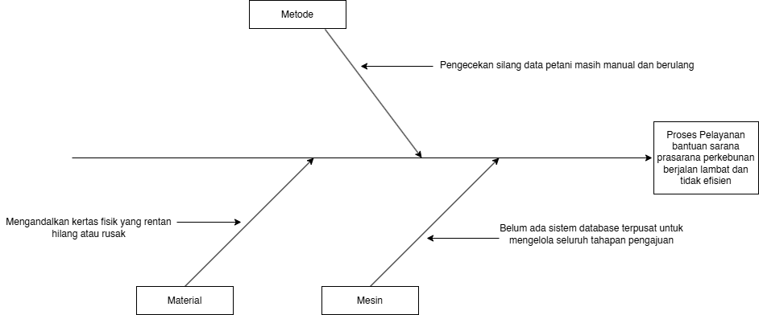
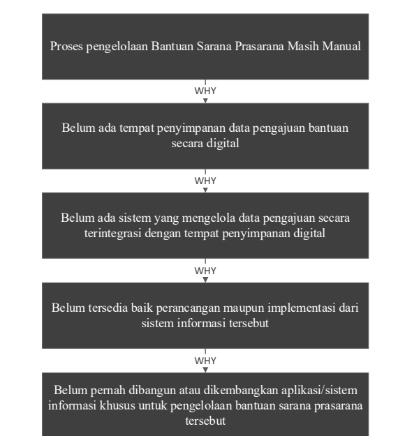
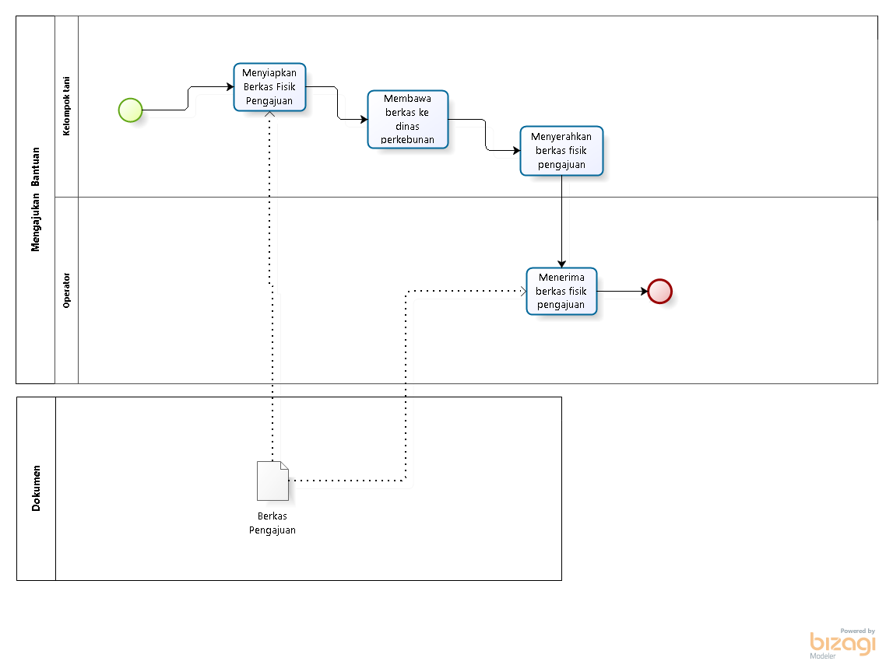
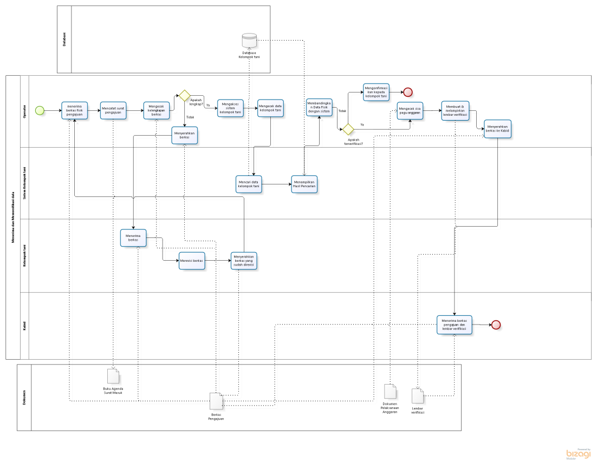
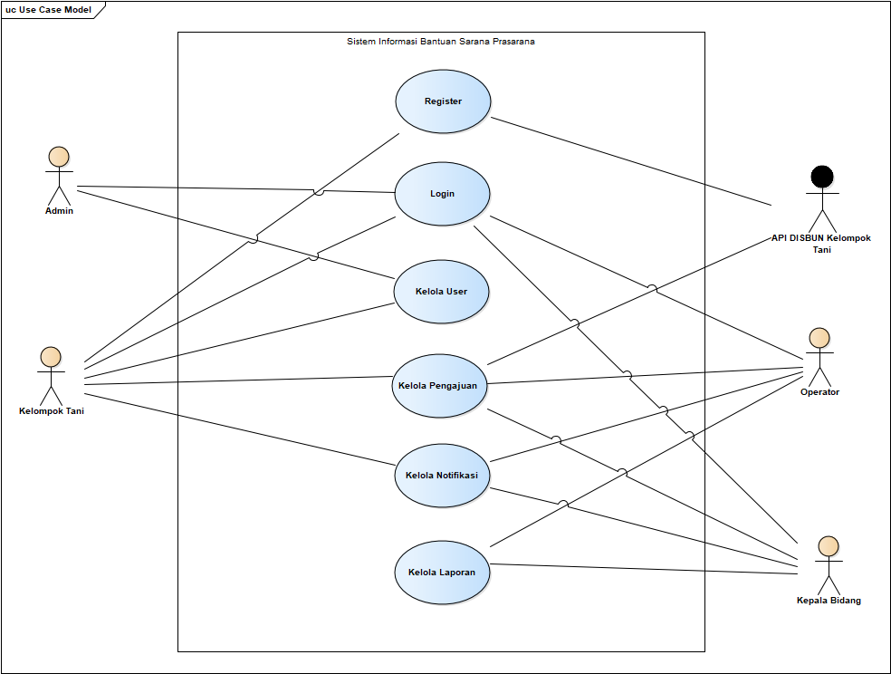
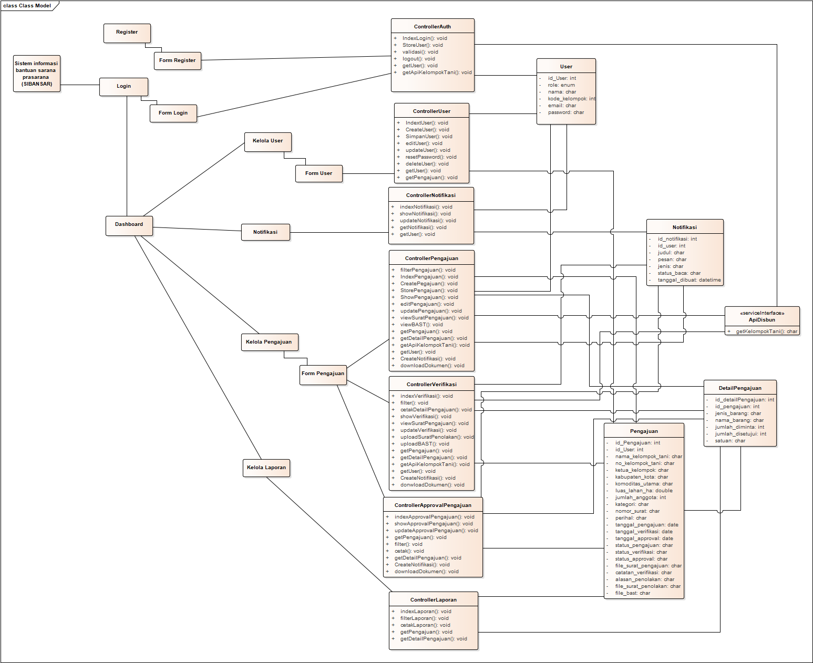

Analisis Rantai Nilai Porter
Pemetaan aktivitas utama dan pendukung untuk menemukan titik perbaikan proses layanan bantuan.
Sistem digitalisasi pengajuan bantuan sarana prasarana perkebunan terintegrasi dengan validasi bertahap untuk Dinas Perkebunan Provinsi Jawa Barat.
Distribusi bantuan sarana prasarana perkebunan kepada ratusan kelompok tani di seluruh Jawa Barat sebelumnya dilakukan secara manual. Berkas proposal berbentuk dokumen cetak fisik yang dikirim langsung ke kantor, sehingga memunculkan berbagai inefisiensi operasional.
Tumpukan proposal kertas di meja kerja rentan hilang, rusak, atau terselip saat perpindahan tahap verifikasi antar-seksi.
Kelompok tani kesulitan mengetahui apakah proposal sedang diperiksa operator, menunggu verifikasi lapangan, atau disposisi Kepala Bidang.
Sulit mendeteksi apakah suatu kelompok tani telah menerima jenis bantuan yang sama pada tahun anggaran berjalan.
Melakukan identifikasi masalah dan elisitasi kebutuhan melalui wawancara mendalam bersama operator seksi sarpras dan observasi alur disposisi dokumen di Dinas Perkebunan Provinsi Jawa Barat.



| Aktor (Peran) | Tanggung Jawab Utama dalam Sistem | Hak Akses (RBAC) |
|---|---|---|
| Admin | Manajemen akun pengguna, pemeliharaan master data sarpras, dan pengaturan hak akses. | Full Access |
| Kelompok Tani | Registrasi mandiri, submit proposal bantuan, upload syarat legalitas, tracking status pengajuan. | Pengajuan & Tracking |
| Operator Dinas | Verifikasi kelengkapan berkas fisik & digital, validasi lapangan, dan pembuatan rekomendasi teknis. | Verifikasi & Rekomendasi |
| Kepala Bidang (Kabid) | Meninjau berkas rekomendasi, validasi final persetujuan/penolakan (approval/reject), monitoring dasbor. | Approval & Monitoring |
Memetakan proses bisnis lama (As-Is) yang lambat dan memakan waktu berhari-hari, kemudian merancang alur proses bisnis baru (To-Be) menggunakan standar BPMN 2.0 untuk memastikan alur verifikasi berkas berjalan otomatis dan berurutan.


Menyusun spesifikasi teknis mencakup Use Case Diagram untuk menggambarkan interaksi 4 aktor, Sequence Diagram untuk memvalidasi alur pesan antar objek, serta Class Diagram relasi entitas basis data MySQL.


Berikut adalah tangkapan layar antarmuka sistem web SIBANSAR yang telah selesai dibangun dan diimplementasikan pada lingkungan Dinas Perkebunan Provinsi Jawa Barat. Seluruh antarmuka telah disesuaikan dengan identitas resmi instansi.
 Operator & Kabid
Operator & Kabid
Menjamin keandalan fungsionalitas, validasi input batas nilai (boundary), dan keamanan hak akses sistem melalui pengujian Boundary Value Analysis (BVA) dan Black Box Testing terstruktur pada 7 modul utama sesuai Dokumen Pembangunan Perangkat Lunak (DPPL) / Bab V Laporan Tugas Akhir.
| ID Test Case | Modul / Fitur | Skenario & Parameter Boundary (BVA) | Hasil yang Diharapkan | Status QA |
|---|---|---|---|---|
PDHUPL-1.a |
BVA Register | Password < batas minimum (Password="passwor", 7 karakter). | Sistem menampilkan pesan error "Password minimal 8 karakter" dan pendaftaran ditolak. | ✓ Lolos Uji |
PDHUPL-1.c |
BVA Register | Kode Kelompok > batas maksimal (Input kode kelompok 51 karakter). | Sistem menampilkan pesan error "Kode Kelompok maksimal 50 karakter" dan pendaftaran gagal. | ✓ Lolos Uji |
PDHUPL-2.a |
BVA Login | Email < batas minimum format (Email="a@b", 3 karakter). | Sistem menampilkan pesan "Format email tidak valid" dan proses autentikasi gagal. | ✓ Lolos Uji |
PDHUPL-2.c |
BVA Login (RBAC) | Email dan password valid (operator@disbun.test). | Sistem berhasil login dan otomatis mengarahkan ke dasbor peran pengguna masing-masing. | ✓ Lolos Uji |
PDHUPL-3.b |
BVA Kelola User | Nama user > batas maksimal (Input nama 51 karakter). | Sistem menampilkan pesan "Nama maksimal 50 karakter" dan penambahan user gagal. | ✓ Lolos Uji |
PDHUPL-4.b |
BVA Pengajuan | Jumlah diminta < batas minimum (Input jumlah = 0 unit). | Sistem menampilkan pesan "Jumlah diminta minimal 1" dan pembuatan pengajuan gagal. | ✓ Lolos Uji |
PDHUPL-4.c |
BVA Pengajuan | Jumlah diminta > batas maksimal (Input jumlah = 10001 unit). | Sistem menampilkan pesan "Jumlah diminta maksimal 10000 unit" dan pengajuan ditolak. | ✓ Lolos Uji |
PDHUPL-4.d |
BVA Upload Surat | Ukuran file surat proposal > batas maksimal (Upload berat.pdf ukuran 2049 KB). | Sistem memblokir unggahan dengan pesan "Ukuran file maksimal 2048 KB". | ✓ Lolos Uji |
PDHUPL-5.a |
BVA Verifikasi | Alasan penolakan > batas maksimal (Input alasan penolakan 1001 karakter). | Sistem menampilkan pesan "Alasan penolakan maksimal 1000 karakter" dan verifikasi gagal. | ✓ Lolos Uji |
PDHUPL-5.c |
BVA Upload BAST | Ukuran file BAST > batas maksimal (Upload file ukuran 5121 KB). | Sistem menampilkan pesan "Ukuran file BAST maksimal 5120 KB" dan unggah BAST gagal. | ✓ Lolos Uji |
PDHUPL-6.a |
BVA Approval Kabid | Kepala Bidang menekan button Setujui Pengajuan (semua parameter valid). | Sistem berhasil mengubah status pengajuan menjadi "Disetujui Kabid". | ✓ Lolos Uji |
PDHUPL-7.a |
BVA Filter Laporan | Tanggal Akhir < Tanggal Awal (Contoh: Awal 31/01/2025, Akhir 30/01/2025). | Sistem menampilkan pesan "Tanggal akhir harus lebih besar atau sama dengan tanggal awal". | ✓ Lolos Uji |
The SIBANSAR implementation significantly resolved the operational challenges of managing physical infrastructure assistance documents at the West Java Provincial Plantation Office.
Proposal processing and completeness verification time was cut from 5–7 working days to just minutes through the web application.
All proposal documents are digitally archived in a centralized database, eliminating the risk of physical files being lost or damaged.
Agency leaders can monitor the distribution of assistance in real time, and farmer groups gain certainty about the status of their proposals.